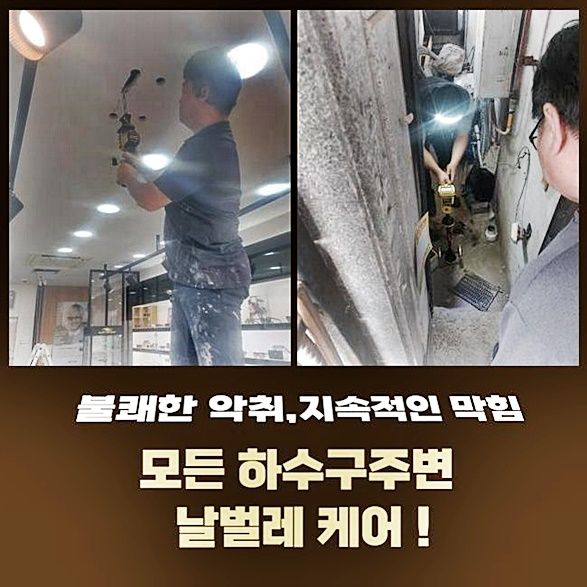
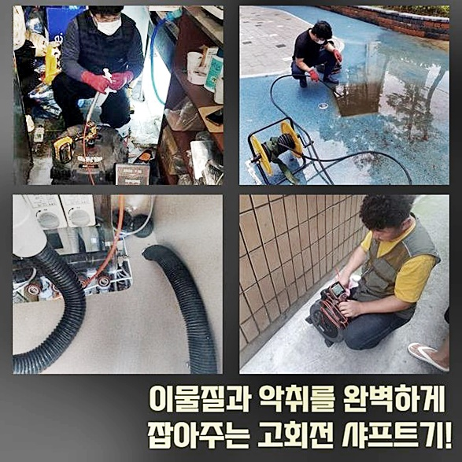
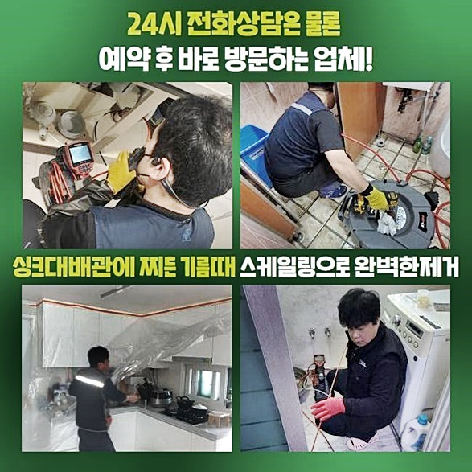
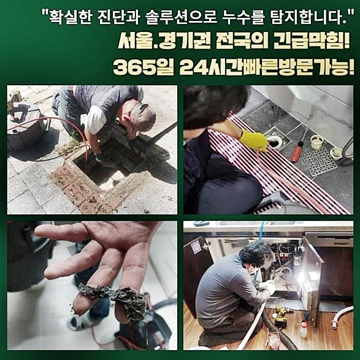
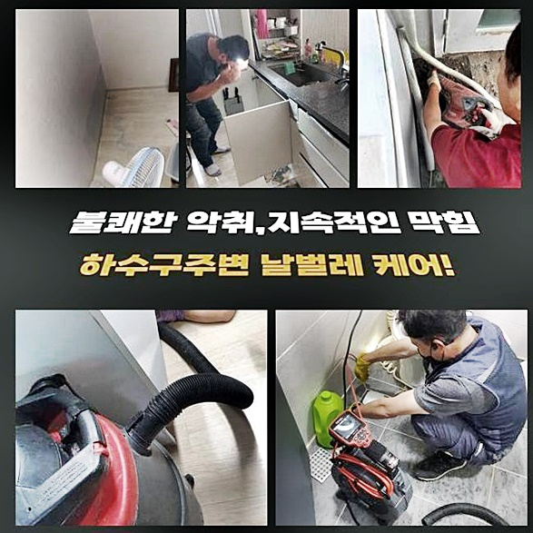
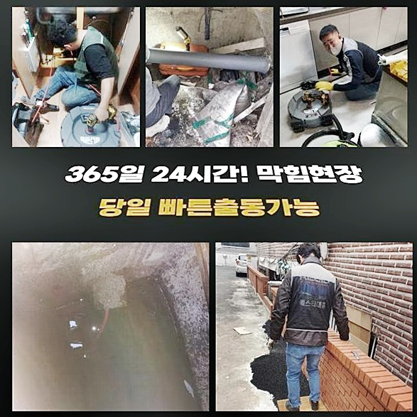

🏠 수원 입북동대변기역류 세류동 맨홀역류 누수탐지공사
용인시 처인구 배관막힘 전문 시공 후기

📋 작업 개요
- 위치: 용인시 처인구, 수원시 영통구, 화성시 동탄
- 서비스 유형: 배관막힘, 하수구청소, 누수수리, 고압세척, 내시경점검
- 작업 일시:
- 업체명: 하수구수사대 (010-5615-2118)
🔍 문제 상황
수원 입북동대변기역류 세류동 맨홀역류 누수탐지공사
배관 계열은 세월이 흐를수록 데미지를 입기때문에 다수의 문제들을 촉발시키게 됩니다
신규 배관이 아니라면 통로에 물때 및 이물질이 생성돼서 물의 흐름을 막아서고 겹겹이 층을 이루듯이 이물들이 쌓여버려서 종국에는 하수도의 고장이 초래될 수 있는 것입니다
내부 이물질을 분류해 보면 기름진 슬러지나 머리카락 비닐 쓰레기 등이 있는데 계속 내부로 모여든다면 똘똘 결집하여 파이프의 본래 향로를 답답하게 꽉 막아서고 마는 겁니다
예전에 지어진 건물이라면 정기성있는 청소 작업과 유지보수에 대한 노력이 필요하며 하수구가 막히는 것을 미리미리 조치하는 것이 바람직한 관리입니다
막힘의 초기 수준에서 이상증세를 느끼고 적합한 대응을 가하는 게 심한 공사를 막아서는데 주요한 본분을 다합니다
실내에 끼치는 악영향이 조금이라도 축소될 수 있게 시간 간격에 맞게 탐색을 해야한다 싶다면 시간에 맞게 방도를 시행하는 것이 바람직한 관리입니다
전화를 받아보았더니 아파트 형태의 건물이라서 다수의 세대에 대한 손해가 현재 진행형이라서 얼른 해결을 해드려야만 했습니다!
예전에도 타업체가 출동했지만 어떠한 문제점도 감도 못 잡았다는 사실을 듣고 나니 단순한 막힘이라기 보다는 해결까지 심혈을 기울여야 할 것임을 판단하여 만반의 준비를 했네요
모든 설비를 다루는 전문가로서 열정적으로 문제를 나아지게 만들고 싶다는 열정이 생겼어요
전천후로 힘을 발휘할 수 있는 장치들을 두루 챙기고 얼른 현장으로 이동하게 되었습니다

🔎 원인 분석
💡 전문가 진단: 정밀 진단 장비를 사용하여 슬러지의 고착 여부를 판명하고 타격/세척 작업을 실시했습니다.
의뢰인분이 쫓기는 듯한 안색이 보였기 때문에 막힘이 한치도 나아지지 않았음을 미리 알 수 있었네요
본격적인 청소 작업에 착수하기에 앞서 어떠한 매커니즘으로 작업이 달성되는 건지를 대략적으로 안내해 드리면서 마음의 안정을 드렸어요
하수구를 개방하기 위하여 노폐물을 조금씩 덜어내면서 조금씩 수로가 확보되는 양상을 확인해 주는데요
새로운 관로를 확보한 듯 화사하고 밝은 파이프에 많은 양의 하수도 시원하게 폐기되는 것을 목적으로 삼고 시공을 이행하게 되는 것입니다
다량의 노폐물들을 조금씩 긁어내 주면서 틈도 없이 굳어버린 침전물들이 쌓여있는 바람에 제거하기도 난감한 지대도 물론 있었습니다
여러 지식을 보유한 전문진들은 뛰어난 기술력과 장치를 동원해서 정확도 높은 상황을 분석한 다음 문제에 접근해 나가기 시작합니다
올바른 판단을 이끌어 내려면 설비에 대한 소양과 지식들이 충만하게 보유되어야 합니다
무슨 오류인지 알아내지 못하면 조만간 재차 막힘이 생기고 막힘없이 나아가는 통수를 확보하기는 힘듭니다
장소마다 문제되는 지점과 막힘의 중중도가 다르기도 하고 추가로 원인의 범주에 따라서 접근 방향이 달라지기도 합니다
지난주에 방문했었다던 업체는 변기통 내부만 조사하고 더 밑의 오수관까지는 체크하지 않았었다고 작업 내역을 밝혀주셨어요
전문가에게 발등 찍혀버린 상황이라 처리안되면 어쩌지 노심초사하셨을 고객님께 공감하므로 고압세척기를 발동시켜서 청소했습니다
현재 물길을 봉쇄하고 있는 여러 노폐물을 단번에 씻어내려고 물대포를 통한 고압세척에 착수했는데 내부의 물티슈가 주된 원인이라고 감지됐어요

🔧 작업 과정
걸어서 투출시키는 작업이기 때문에 작업시간은 길어졌지만 방해물이 하나도 남지 않도록 완성도에 심혈을 기울였네요
물티슈는 섬유질이기 때문에 따로 분리 배출을 하면서 조심해서 물티슈를 이용하시라는 점을 다시 알려드렸어요
한 세대도 욕실을 제대로 쓸 수 없는 사태를 장기간 직면하셨기 때문에 얼른 관로를 개방시키는 게 무엇보다 중요했죠!
근처 환경을 확인해 보았더니 하수구 내부가 정체를 빚다보니 거꾸로 샘솟는 사태까지 벌어진 나쁜 컨디션이었네요
소규모의 이물만 축적됐다면 짧게 끝나고 말겠지만 침전물들이 딱딱하게 굳어버린다면 역류나 파손같은 문제들을 탄생시킬 수 있으니 속도를 높여 처리해야 합니다
상황을 가볍게 점검하는 것만으로도 무슨 상황인지 대강 분석되지만 보다 구체화를 시키기 위해서 오수관의 문제점을 연구해 보았습니다
하수구 커버를 벗겨내자 바로 악취가 풍겨나왔고 커다란 규모로 확장된 이물질로 인해 배관 속이 조금의 여유도 없이 봉쇄되어서 물이 배출되지 못하고 있었네요
지독한 하수구 냄새는 시설의 이용자분들에게 역한 느낌을 주고 천장과 바닥 전체적으로 침범할 수 있습니다
하수구가 오염되는 사안들로 하여금 곳곳이 오염되어 버린다면 위생으로 인한 어려움도 생겨버릴 수 있는 불행의 시작으로 작용할 수 있어요
욕실 공간의 경우에는 피부와 시설물이 밀접하게 닿는 상황들이 다수이기 때문에 충분한 클리닝을 해야하는 구역으로 분류됩니다
물이 세월아 네월아 하면서 폐기되거나 물고임이 형성될 시에는 스피드있게 하수구 담당자에게 고쳐달라고 말해야 합니다
신축 건물이 아니고 여러 세대가 뭉친 건물일수록 더 자주 하수구의 고장이 형성된다고 볼 수 있어요
하수구의 이상증세가 발생하고 미루지 않고 처리할 수 있지만 일이 유발되기 이전에 탐지와 클리닝을 받는 것이 방어하는 것이 좋을 겁니다
돈도 절약할 수 있고 한 세대만 한정될 뿐 전 세대가 어려움을 겪지 않을 수 있겠죠
혼자서 처리하려고 무모하게 작업하는 것은 불건강한 배관을 추가적으로 악화시킬 수 있거든요
파이프가 연식이 꽤 됐다면 소소한 충격만 들어가도 실금이나 굵은 공금이 생길 여지가 충분하기 때문입니다!
따라서 전문적인 업체에 의뢰하여 속성을 조사한 뒤에 부합하는 방책을 세우는 것이 만족도 높은 결과를 얻을 수 있습니다
긴 호스 끝에 달린 카메라를 넣으면 깊은 지대의 배관 컨디션까지 체크할 수 있으며 이물질의 바운더리를 분명하게 데이터화할 수 있습니다
생활용수가 이동하게 되는 모양새를 따라가면서 전체적인 하수관을 진단해 보았더니 오염원이 줄줄이 이어진 채 벽체에 달라붙어 있었어요


✅ 작업 완료
넓은 구역에 이물질이 분포한 케이스면 기기 중에서 고압세척기를 이용해서 배관 전체를 씻어내리는 게 효과적입니다
오염원을 하나하나 점차 덜어내는 게 아니라 화끈한 물살로 하수관 자체를 빠른 개선을 볼 수 있습니다
내시경으로 내부 상황을 비교분석 해주면서 고압수 기계의 레벨이나 미묘한 균형 조율을 전문가로서 손봐줘야 합니다
시중의 배관 클리너들은 넣는 것은 효과가 짧은 수단이며 장기간 안정화를 도모하는 개선책은 아닙니다
하수구 문제는 전문진단을 작업 전 수행해야만 온전한 전환점을 보실 수 있다는 것을 인지하셔서 관련된 이슈들이 발생하면 휴일이라도 방문시간을 잡아주시면 좋을 것 같습니다



⚠️ 하수구 배관 막힘 예방 및 관리 가이드
- ✅ 머리카락, 비닐, 물티슈 등 물에 분해되지 않는 이물질은 절대 흘려보내지 마세요.
- ✅ 기름기 많은 식기는 설거지 전 키친타올로 먼저 기름때를 닦아내세요.
- ✅ 주기적으로 배수구에 뜨거운 물을 가득 부어주어 유지방 고착을 방지하세요.
- ✅ 작업 후 1년 이내 재발 시 무상 A/S 보증 서비스를 제공합니다.
💡 핵심 정리
- 확실한 장비 작업(내시경 점검 및 샤프트 스케일링)으로 원인을 뿌리 뽑습니다.
- 작업 후 1년 이내에 동일한 부위 재발 시 100% 무상 A/S 서비스를 보장합니다.
- 서울 · 경기 · 인천 전 지역에 24시간 언제든 긴급 출동할 수 있도록 항시 대기 중입니다.
❓ 자주 묻는 질문 (FAQ)
🚨 용인시 처인구 배관막힘 문제로 고민이신가요?
정확한 원인 진단과 확실한 시공으로 재발 없는 해결을 약속드립니다.
24시간 긴급 출동 | 서울 · 경기 · 인천 전지역 | 1년 내 재발 시 무상 A/S